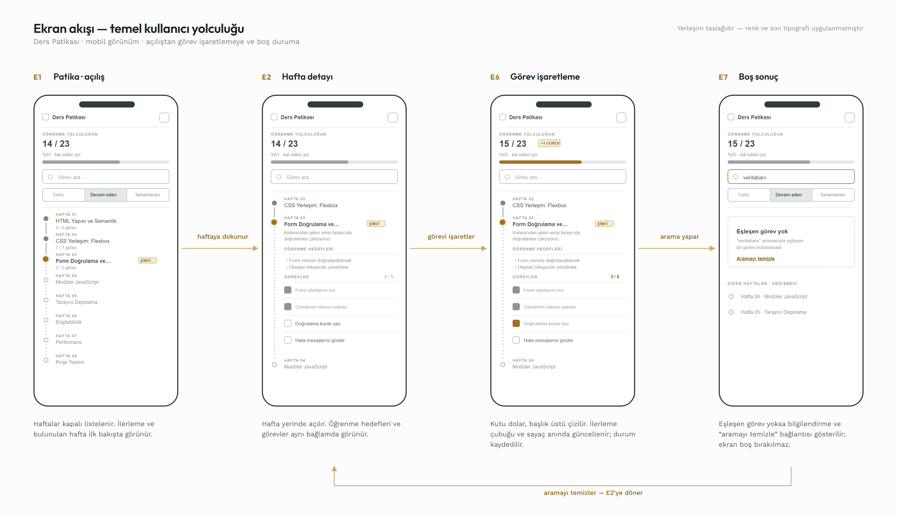
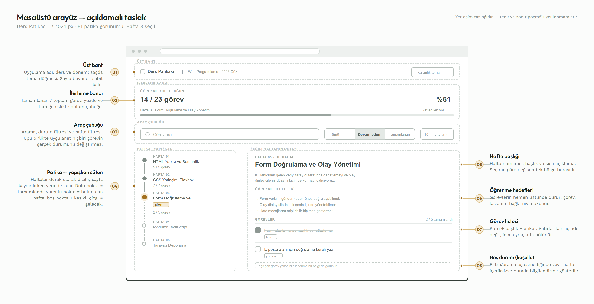
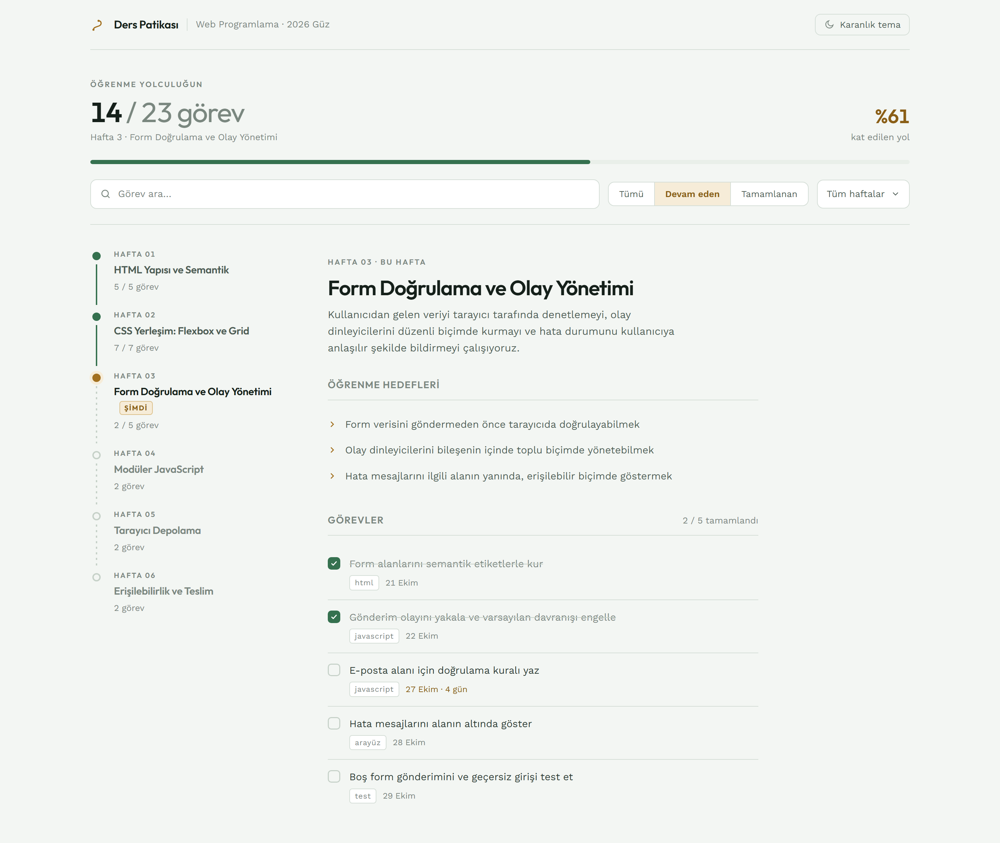
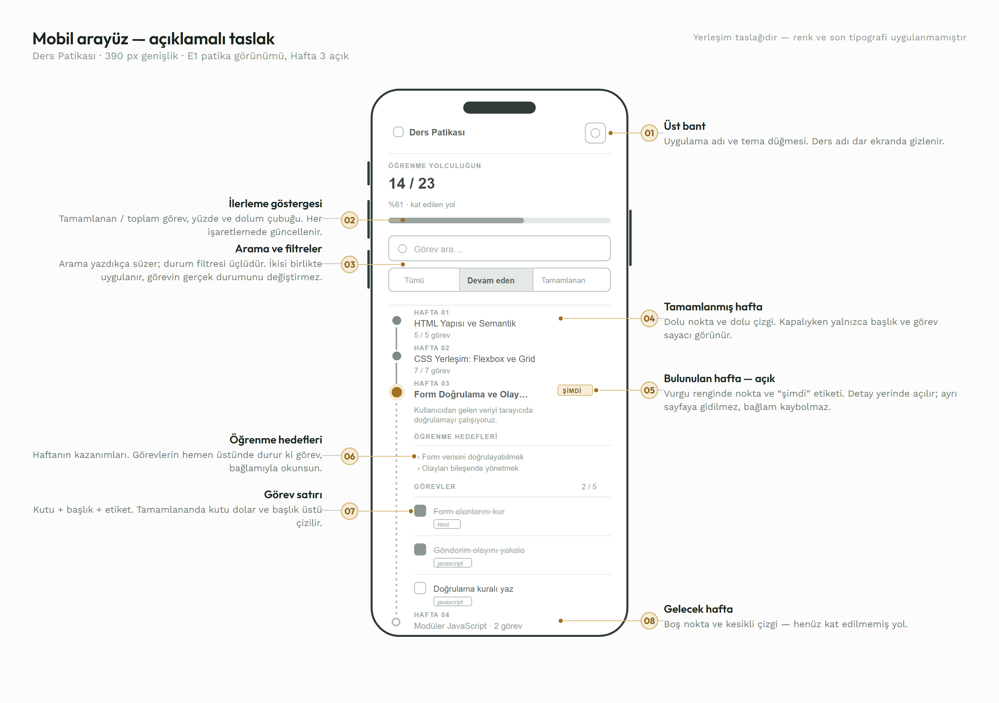
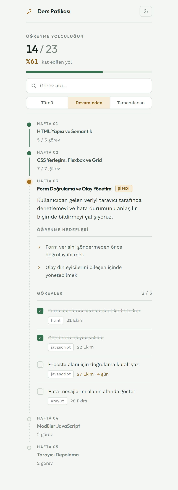
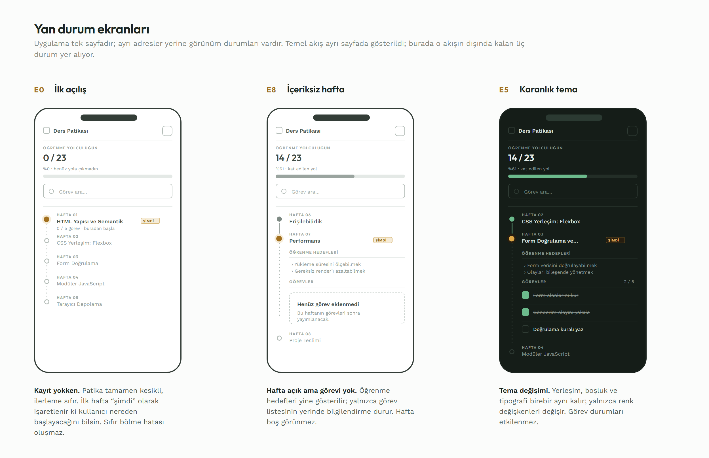
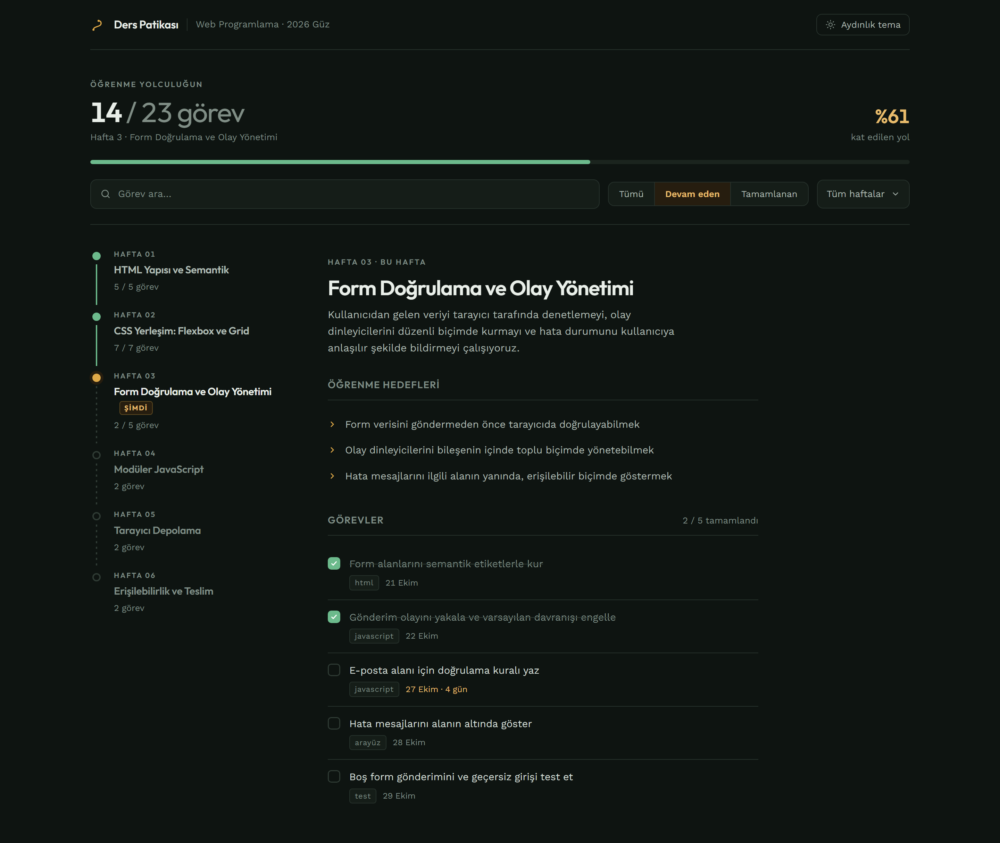

P1-04 · Sistem ve Arayüz Tasarımı
Etkileşimli Ders Deneyimi Panosu için tasarım yönü, ekran haritası ve arayüz taslağı. Bu belge, geliştirme başlamadan önce neyin nasıl görüneceğini ve hangi ekranların bulunacağını sabitler.
Proje teknik dokümanı açık bir uyarı içeriyor: uygulama "klasik to-do list görünümüne indirgenmemeli", öğrenme ilerlemesi görsel olarak anlamlı biçimde sunulmalı. Bu, estetik bir tercih değil değerlendirme kriteri.
Seçtiğimiz metafor: ders dönemi bir patikadır, her hafta bu patikada bir duraktır. Tamamlanan haftalar arkada kalan yol olarak dolu çizilir, bulunulan hafta işaretlenir, gelecek haftalar kesikli çizgiyle beklemede durur. İlerleme bir yüzde değil, kat edilen mesafedir.
Eğitim uygulamaları için yaygın öneri pastel, yuvarlak, oyuncak hissi veren (claymorphism) bir arayüzdür. Bu yön hem bu dersteki diğer gruplarda yüksek olasılıkla tekrarlanacak hem de "ders takibi" gibi ciddi bir işi hafifletiyor. Biz bunun yerine organik / topografik bir yöne gittik: toprak tonları, ince çizgiler, yol metaforu. Hem ayırt edici hem de içerikle tutarlı.
| İlke | Karşılığı |
|---|---|
| İlerleme mesafedir | İlerleme göstergesi yalnızca yüzde değil; patikanın ne kadarının dolduğu. |
| Bağlam kaybolmaz | Görev her zaman ait olduğu haftanın ve öğrenme hedefinin yanında görünür; serbest bir liste yoktur. |
| Tek vurgu rengi | Dikkat tek bir yere gider: bulunduğun durak. Geri kalan her şey nötr. |
Nötrler saf gri değil, hafif yeşile çalan gri — vurgu rengiyle aynı dünyadan geldikleri için seçilmiş hissi veriyor. Tek vurgu rengi okr/toprak sarısı (yol işareti), başarı rengi ise ondan ayrı bir yosun yeşili. Saf siyah ve saf beyaz kullanılmıyor.
Renkler koda doğrudan yazılmaz. styles/variables.css içinde CSS değişkeni olarak tanımlanır; tema değişimi kök elemandaki data-theme niteliğiyle yapılır. Böylece US-09 (tema değiştirme) tek satırlık bir değişiklikle çözülür.
Durum yalnızca renkle anlatılmaz: tamamlanan görevde dolu kutu + üstü çizili metin, bulunulan haftada "şimdi" etiketi, gelecek haftalarda kesikli çizgi var. Renk körü bir kullanıcı da durumu ayırt edebilir.
Başlıklarda Outfit (geometrik, karakterli), gövdede Work Sans (yüksek okunabilirlik). Pano arayüzü olduğu için serif kullanılmıyor. Sayılar font-variant-numeric: tabular-nums ile hizalanır — ilerleme oranı değişirken rakamlar zıplamaz.
Not: Bu belge sistem yazı tipleriyle görüntüleniyor. Outfit ve Work Sans uygulamaya @fontsource/outfit ve @fontsource/work-sans paketleriyle dahil edilecek — internet bağlantısı gerektirmez, demo ortamında da çalışır.
Uygulama tek sayfadır; ayrı adresler yerine görünüm durumları vardır. Haritada her kutu kullanıcının karşılaşabileceği bir ekran durumudur.
┌─────────────────────────┐
│ UYGULAMA AÇILIŞI │
│ localStorage okunur │
└───────────┬─────────────┘
│
┌─────────────┴─────────────┐
│ │
┌─────────▼──────────┐ ┌──────────▼───────────┐
│ E0 · İLK AÇILIŞ │ │ E1 · PATİKA │
│ kayıt yok │ │ ana görünüm │
│ tüm haftalar açık │ │ hafta durakları │
└─────────┬──────────┘ └──────────┬───────────┘
└─────────────┬─────────────┘
│
┌──────────────┬──────────┼──────────┬──────────────┐
│ │ │ │ │
┌──────▼─────┐ ┌──────▼─────┐ ┌──▼───────┐ ┌▼───────────┐ ┌▼──────────┐
│ E2 · HAFTA │ │ E3 · FİLTRE│ │ E4·ARAMA │ │ E5 · TEMA │ │ E6·GÖREV │
│ DETAYI │ │ UYGULANMIŞ │ │ SONUÇLARI│ │ DEĞİŞİMİ │ │ İŞARETLEME│
│ hedefler + │ │ liste │ │ eşleşen │ │ renkler │ │ durum + │
│ görevler │ │ daralır │ │ görevler │ │ güncellenir│ │ ilerleme │
└──────┬─────┘ └──────┬─────┘ └──┬───────┘ └────────────┘ └───────────┘
│ │ │
│ ┌─────▼──────────▼─────┐
│ │ E7 · BOŞ SONUÇ │
│ │ "eşleşen görev yok" │
│ └──────────────────────┘
│
┌──────▼──────────────┐
│ E8 · İÇERİKSİZ HAFTA│
│ "bu haftaya içerik │
│ henüz eklenmedi" │
└─────────────────────┘
Dokuz ekran durumu. E0, E7 ve E8 "boş durumlar"dır — kabul kriterlerinde açıkça isteniyor ve çoğu projede atlandığı için ayrıca tasarlandı.
Yukarıdaki harita tüm durumları listeliyor; aşağıdaki akış ise kullanıcının bu durumlar arasında hangi sırayla geçtiğini gösteriyor.

Ekran akışı. Açılıştan görev işaretlemeye ve boş duruma kadar temel yol. Dönüş oku, aramanın temizlenmesiyle kullanıcının hafta detayına geri döndüğünü gösterir.
Asimetrik iki sütun: solda patika (yapışkan, kaydırmada sabit kalır), sağda seçili haftanın detayı. Ortalanmış tek sütun kullanılmadı — patikanın dikey akışı sol kenarda bir "omurga" oluşturuyor.

Wireframe. Renk ve içerik yok; yalnızca ne nerede ve neden. Kesikli çerçeveler yerleşim bölgelerini, numaralı açıklamalar her bölgenin davranışını anlatır.

Mockup · 1440 px. Aynı yerleşimin renk, tipografi ve gerçek ders içeriğiyle doldurulmuş hâli. Geliştirmede hedeflenen görünüm budur.
| Bölge | İçerik | Davranış |
|---|---|---|
| Üst bant | Uygulama adı, ders ve dönem, tema düğmesi | Sabit yükseklik, alt kenarlıkla ayrılır |
| İlerleme bandı | Tamamlanan / toplam görev, yüzde, ilerleme çubuğu, bulunulan hafta | Her görev değişiminde güncellenir |
| Araç çubuğu | Arama alanı, durum filtresi (üçlü), hafta filtresi | Filtre ve arama birlikte uygulanır |
| Patika (sol) | Haftalar, durum noktaları, görev sayacı | Kaydırmada yapışkan; hafta seçimi sağ sütunu değiştirir |
| Detay (sağ) | Hafta başlığı, açıklama, öğrenme hedefleri, görev listesi | Seçili haftaya göre içerik değişir |
Arayüzde kart kutuları kullanılmadı. Gruplama, ince ayraç çizgileri ve boşlukla yapılıyor; gölge yalnızca gerçekten katman gerektiğinde kullanılacak. Böylece ekran kalabalıklaşmıyor ve patikanın dikey çizgisi tek yapısal unsur olarak öne çıkıyor.
Tek sütun. Patika yatay bir şeride dönüşmez — dikey kalır, çünkü metafor zaten dikey akıyor. Seçilen hafta patikanın içinde yerinde açılır; ayrı sayfaya gidilmez. Arama ve filtreler üstte yapışkan bir blokta toplanır.

Wireframe. Dokuz numaralı açıklama her bölgenin ne olduğunu ve neden orada durduğunu anlatır.

Mockup · 390 px genişlik. Hafta kapalıyken yalnızca başlık ve görev sayacı görünür; bulunulan hafta yerinde açılır, ayrı bir sayfaya gidilmez.
| Masaüstünden farkı | Gerekçe |
|---|---|
| İki sütun tek sütuna iner | Dar ekranda yan yana yerleşim okunabilirliği bozar |
| Hafta filtresi gizlenir | Patika zaten haftaları gösteriyor; tekrar eden kontrol kaldırıldı |
| Ders adı üst bantta gizlenir | Sınırlı genişlikte uygulama adı yeterli |
| Detay patikanın içinde açılır | Bağlam korunur, kullanıcı yerini kaybetmez |
Dokunma hedefleri en az 44 × 44 px; hiçbir kırılımda yatay kaydırma yok. Uzun görev başlıkları taşmaz, satır atlar.
Uygulama tek sayfa olduğu için ayrı adresler yoktur; her "sayfa" bir görünüm durumudur. Temel akışta görünmeyen üç durumun taslağı aşağıda.

E0, E8 ve E5. Boş durumlar çoğu projede atlanır; kabul kriterlerinde açıkça istendiği için ayrıca tasarlandı.
Durumların tam listesi ve tetiklenme koşulları:
| Durum | Ne zaman | Ekranda |
|---|---|---|
| E0 · İlk açılış | Hiç görev işaretlenmemiş | İlerleme "0 / 20", patika tamamen kesikli, ilk durak vurgulu |
| E7 · Boş sonuç | Arama/filtre hiçbir görevle eşleşmiyor | "Aramanla eşleşen görev yok" + Filtreyi temizle bağlantısı |
| E8 · İçeriksiz hafta | Haftanın görevi yok | "Bu haftaya henüz görev eklenmedi" — hedefler yine gösterilir |
| Sıfır görev | Toplam görev sayısı 0 | İlerleme %0 gösterilir, bölme işlemi yapılmaz |
Karanlık tema ayrı bir tasarım değil, aynı yerleşimin farklı renk değişkenleriyle çalışan hâli. Düzen, boşluklar ve tipografi birebir aynı kalır — yalnızca variables.css içindeki değerler değişir.

Karanlık tema. Vurgu rengi koyu zeminde okunabilirlik için açılır (#A2701F → #DFA948), tamamlanan rengi de aynı şekilde (#35714F → #6CBA8C). Kontrast her iki temada da korunur.
Aşağıdaki blok patikanın tek tek parçalarını yakın planda gösteriyor: durum noktaları, dolu / kesikli çizgi, "şimdi" etiketi, hedef listesi ve görev satırları.
Hi-fi önizleme. Dolu yeşil çizgi kat edilen yolu, okr nokta bulunulan haftayı, kesikli çizgi önümüzdeki haftaları gösterir.
| Etkileşim | Davranış | Süre |
|---|---|---|
| Hafta açma/kapama | Yükseklik ve opaklık geçişi | 240 ms |
| Görev işaretleme | Kutu dolar, metin üstü çizilir, ilerleme çubuğu akar | 180 ms |
| İlerleme çubuğu | Genişlik değil transform ile | 320 ms |
| Patika ilk yükleme | Duraklar sırayla belirir (kademeli gecikme) | 60 ms aralık |
| Tema değişimi | Renk geçişi; düzen değişmez | 200 ms |
| Odaklanma | 2 px vurgu rengi halka, her iki temada görünür | anlık |
Yalnızca transform ve opacity animasyonlanır. prefers-reduced-motion açıksa tüm geçişler kapatılır — bu, erişilebilirlik kontrol listesinin bir maddesi.
Her taslak bölgesinin hangi React bileşenine ve hangi kullanıcı hikâyesine karşılık geldiği:
| Taslak bölgesi | Bileşen | Hikâye |
|---|---|---|
| Başlık + ders bilgisi | Header | — |
| İlerleme çubuğu | ProgressBar · calculateProgress | US-07 |
| Tema düğmesi | ThemeToggle · useTheme | US-09 |
| Arama alanı | SearchBar | US-06 |
| Durum / hafta filtresi | FilterBar · filterTasks | US-04, US-05 |
| Patika ve duraklar | TrailList · TrailStop | US-01 |
| Öğrenme hedefleri | ObjectiveList | US-02 |
| Görev listesi | TaskList · TaskItem | US-03 |
| Boş durum blokları | EmptyState | US-04, US-06 |
| Veri kalıcılığı | useLocalStorage | US-10 |
| Responsive yerleşim | styles/responsive.css | US-08 |
README'deki WeekList / WeekCard bileşenleri bu tasarımda TrailList / TrailStop adını alıyor. İsimler konseptle uyumlu hâle geldi; README güncellenmeli.
| Aralık | Yerleşim | Patika |
|---|---|---|
| < 640 px | Tek sütun, yapışkan araç çubuğu | Dikey; hafta yerinde açılır |
| 640 – 1023 px | Tek sütun, filtreler yan yana | Dikey; detay durağın altında |
| ≥ 1024 px | İki sütun (patika + detay), patika yapışkan | Dikey; detay sağ sütunda |
Üç kırılımda da yatay kaydırma yok. Yerleşim yüzde hesabıyla değil CSS Grid ile kurulur; uzun görev başlıkları taşmaz, satır atlar.
Takip listesindeki doğrulama kriterleri ve bu belgedeki karşılıkları:
| Kriter | Karşılığı | Durum |
|---|---|---|
| Sayfa akış şeması | Bölüm 04 · durum haritası (9 durum) ve dört ekranlı akış diyagramı | Var |
| Masaüstü wireframe | Bölüm 05 · 9 numaralı açıklamalı wireframe | Var |
| Mobil wireframe | Bölüm 06 · 9 numaralı açıklamalı wireframe | Var |
| Kart ekranı taslakta | Patika durakları — bölüm 04, 05, 06 | Var |
| Görev ekranı taslakta | Görev listesi bölgesi — bölüm 04, 05, 06 | Var |
| İlerleme ekranı taslakta | İlerleme bandı — bölüm 04, 05, 06 | Var |
| Kullanıcı akışı anlaşılır | Bölüm 04 · akış diyagramı + README'deki kullanıcı akışı | Var |
| Ek olarak: tasarım sistemi (renk, tipografi), karanlık tema, boş durum ekranları ve bileşen eşlemesi — hocanın istediğinin ötesinde, geliştirme aşamasına doğrudan girdi olacak şekilde. | ||
Bu belge onaylandıktan sonra: variables.css renk değişkenleriyle oluşturulur (P1-05 kapsamında), bileşen dosyaları taslaktaki bölgelere göre açılır, README'deki bileşen adları güncellenir.